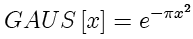

The Gaussian function is a bell-shaped curve.

The Gaussian function may be shifted and scaled:
A more general form of the Gaussian function has exponent n:

Parameters:
Support: infinite
Area: the standard Gaussian has an area of 1. The area of higher orders of the Gaussian approaches 2 as the exponent increases.
Symmetry: even
Read more about the Gaussian function at: